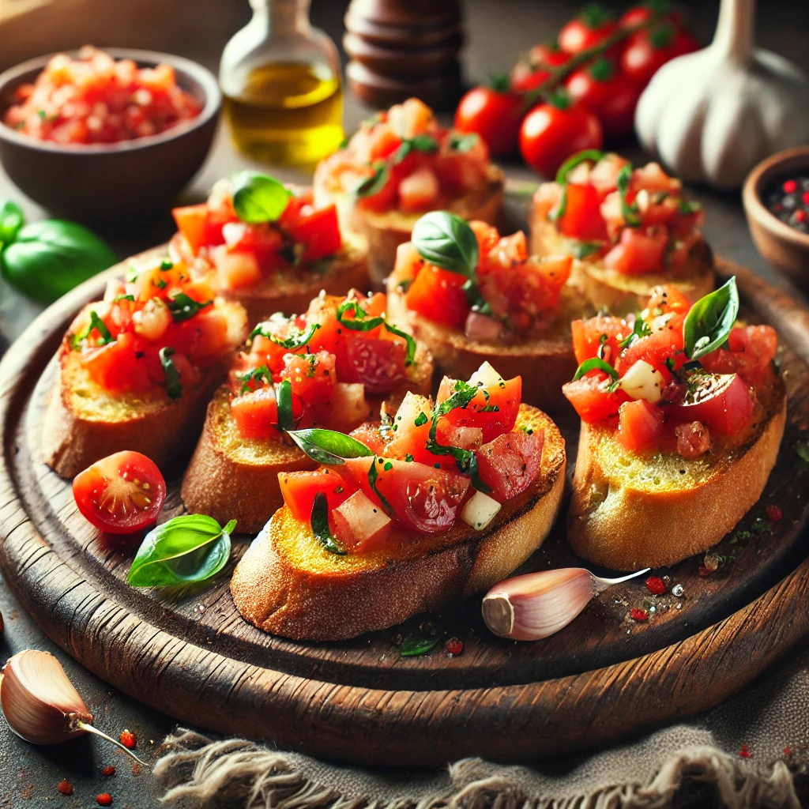

Bruschetta
Ingrédients
- 4 tranches de pain de campagne
- 2 tomates mûres
- 1 gousse d'ail
- Quelques feuilles de basilic frais
- Huile d'olive extra vierge
- Sel et poivre
Instructions
- Préchauffer le four à 200°C (400°F).
- Couper les tomates en petits dés et les mettre dans un bol.
- Ajouter un filet d'huile d'olive, du sel, du poivre et les feuilles de basilic ciselées aux tomates.
Mélanger et laisser reposer.
- Frotter les tranches de pain avec la gousse d'ail coupée en deux.
- Disposer les tranches de pain sur une plaque de cuisson et les arroser légèrement d'huile d'olive.
- Enfourner les tranches de pain pendant 5 à 7 minutes, jusqu'à ce qu'elles soient dorées et
croustillantes.
- Sortir les tranches de pain du four et les garnir du mélange de tomates.
- Servir immédiatement, éventuellement avec un peu plus de basilic frais pour décorer.